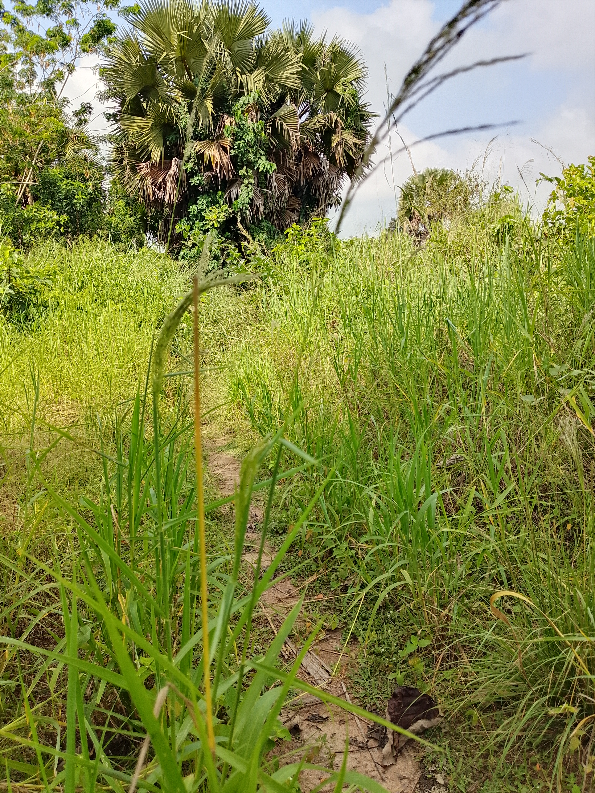
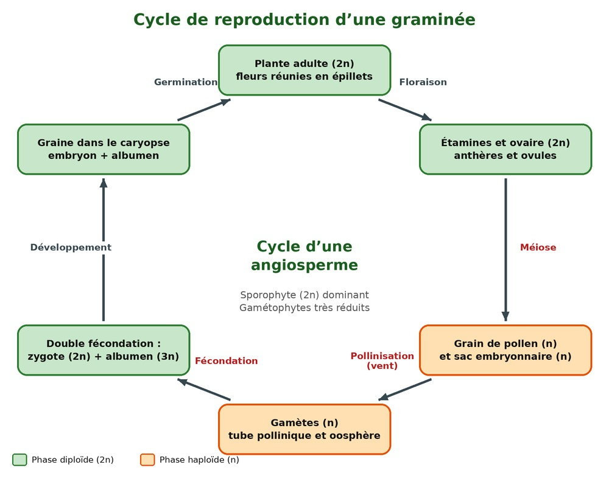

Graminées
« Avec la fleur et le fruit, les végétaux ont protégé leurs graines et ont couvert les prairies, les savanes et les champs du monde entier. » 🌾
L'arrivée des graminées (poacées) marque l'apparition de plantes à fleurs très réduites, dont les ovules sont enfermés dans un ovaire. Ce sont des angiospermes monocotylédones : leur graine ne contient qu'un seul cotylédon.

Le problème résolu : la protection de l'ovule et de la graine
Chez les conifères, les ovules sont nus : rien ne les enferme, et la pollinisation par le vent exige une énorme quantité de pollen. Les graminées ont résolu ce problème grâce à l'ovaire, qui protège l'ovule et devient un fruit, le caryopse (le « grain » de blé, de riz ou de maïs). La double fécondation fournit en plus à la graine une réserve nutritive, l'albumen. Leurs fleurs réduites, regroupées en épillets, sont pollinisées par le vent. Leur croissance à partir de la base des feuilles, leurs racines fasciculées et leur multiplication par rhizomes ou par talles leur permettent enfin de coloniser les milieux ouverts et de repousser après le broutage.

Coordonnées GPS
| Latitude | Longitude | Précision (m) | Milieu |
|---|---|---|---|
| 6.895 | -5.227 | 2.122 | sec |